§ Clouds: Concurrency and Consistency
The major issue here is solving the scenario of multiple people trying to access the same database. For this, let's assume we have a pointer to the DB or its attribute, or whatever → X. We can read and write to X. Now, if we want to do two operations on X, say subtracting 20 and adding 10, we need to do these operations in isolation. If we interleave these operations, we can get a situation where subtracting 20 and adding 10 to 100 might result in a final value of 110. The clearest solution is Do not perform simultaneous R/W to the Db. However, this does not exploit the fact that most DBs are on multiple cores and thus, can actually benefit from parallel execution of queries. Moreover, if this value 100 is, say, the value in our bank account and while executing the query there comes a failure, then how do we handle that? → We need to build failure tolerance into it.
§ Transactions
Transactions are a sequence of one or more SQL operations treated as a unit. These transactions appear to run in isolation and changes are only registered if they are complete. Thus, if our system fails, then we restart the incomplete transaction which would be the ones that were not registered. The correctness of transactions is determined by the
ACID Properties:
- Atomicity → Either all actions in the transaction happen, or none happen. In other words, transactions can't be done partially → They are atomic.
- Consistency → If the DB starts consistent, and all transactions are consistent, then the DB ends up consistent
- Isolation → Execution of one transaction is isolated form another transaction.
- Durability → If a transaction commits, its effects persist.
§ Atomicity
A transaction might
commit after completing all of its actions, or
abort after completing none or partial action. The key point is that from the user's point of view, a transaction always executes all, or none, of its actions → There is no sense of partial completion. This can be implemented in 2 ways :
- Logging → DBMS logs all the actions so that it can undo actions for non-atomic transactions in case of failures (Think Github )
- Shadow Paging → While executing a new transaction, the execution is done on a shadow of the original DB units, so that any intermediate failures will not hamper the concurrency of the original unit (Think caching). Once the transaction is complete, all the units that referred to the original page are updated to refer to the shadow page
§ Durability
It has 3 phases when a crash occurs
- Analysis → Scan the log from the most recent checkpoint to see for all the actions that were active when the crash happened
- Redo → Redo the updates as needed so that all the logged updates are carried-out and written to the disk.
- Undo → Undo the write of all the transactions that were active at the crash.
Thus, at the end only the commited updates are reflected in the database
§ Consistency
We need to enforce the integrity constraints in the database so that the input and the output of consistent transactions are consistent Databases
§ Isolation
Each transaction operates as if it were the only transaction running. This is done by the database in a fashion where the interleaving of operations do not result in simultaneous updates. For example, transaction
T1,T2 are shown below which operate in isolation
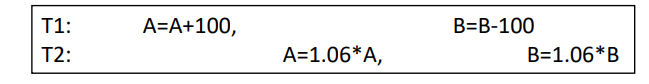
§ Anomalies in Concurrency
There are 3 kinds of anomalies that usually occur:
- Reading Uncommitted Data → When the data has not been committed and we read it in the middle of interleaving, it creates dirty reads. So, in the example shown below, T1 did not commit after Reading and Writing to A and the un-committed value was read by T2 from A and was committed, which is wrong.
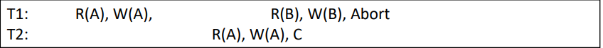
- Unrepeatable Reads → The reads do not produce the same value. In the below example, T1 reads A and then again reads it to verify, but T2 comes in the middle and Writes something leading to the 2 reads of A by T1 not producing the same result.
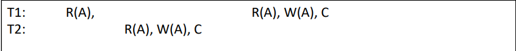
- Overwriting Uncommitted Data → Data is written over before being committed, as seen in the example below where T1 writes to A and B and commits, but before it committed, T2 has already written values to A and B, and thus, the data is not the same.
We solve this through serializability! But for that we need to define
Conflicting Operations → Two operations conflict if they are performed on the same data by different transactions and one of them is a write
§ Schedules
Scheduling is creating a schema Interleaved actions from different transactions. These can be done in three manners:
- Serial → does not interleave data
- Equivalent → 2 schedules creating equivalent effect. Schedules are conflict equivalent if they involve the same actions on the same data and the conflicting actions are ordered the same way
- Serializable→ A schedule that is equivalent to some serial execution of the transactions. Schedules are conflict serializable iff a schedule is conflict equivalent to a serializable schedule
Let's take an Example:
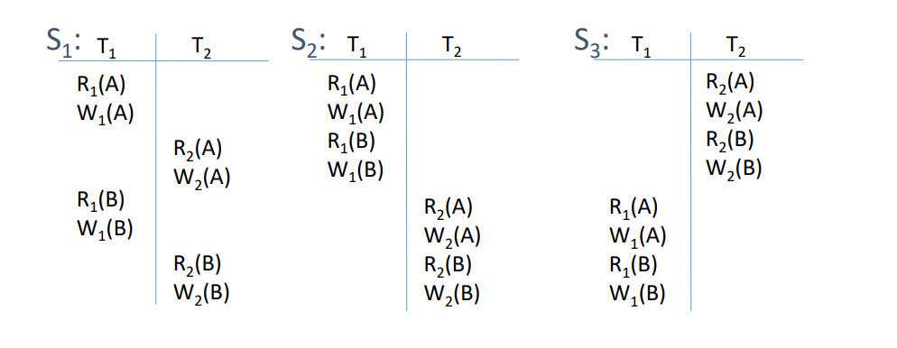
Here, we have schedules
S1,S2,S3 working on DBs A and B, and the conflicting operations are:
R1(A)↔W2(A)R2(A)↔W1(A)W1(A)↔W2(A)R1(B)↔W2(B)R2(B)↔W1(B)W1(B)↔W2(B)
Now, in
S1 and
S2 we see that for the case of both A and B,
R1 and
W1 precede
W2 and
W1 precedes
W2 in the same manner. Thus,
S1≡S2 . Moreover, we see that
S2 is a serial schedule, thus,
S1,S2 are serializable, but this is not the case with
S1,S3 since the actions of the T2 come before T1.
§ Precedence Graphs
We can formalize the check for conflict serializability in schedules by the simple process of swapping adjacent non-conflicting schedules to see if we get a serial schedule or not, as shown below
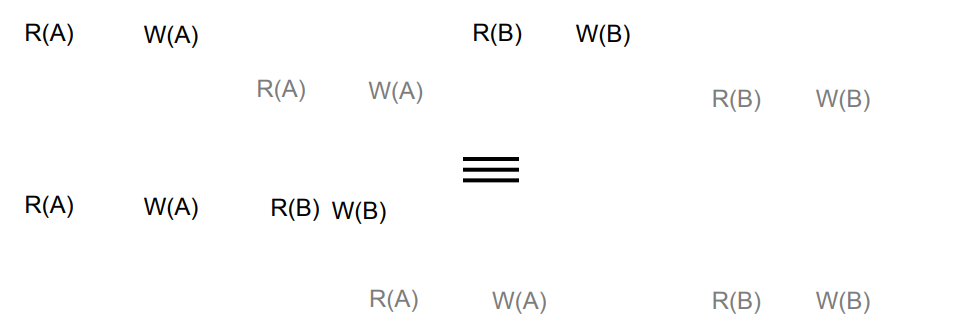
But an even better way is to see it in terms of a precedence graph. So, we just go along the order of operations in a schedule and for each conflict, we see if which transaction's operation precedes, and we make a connection on the nodes name after transactions in that order. For example, in the schedule below, we see that in the cases of A and B both, the operations of the first transaction precede that of the second, and so we have a single like from the first to second in the graph.
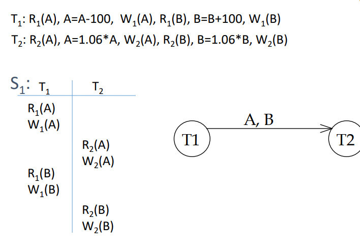
If we have a graph with cycles, then we know that the schedule is not conflict serializable, as shown in the example below
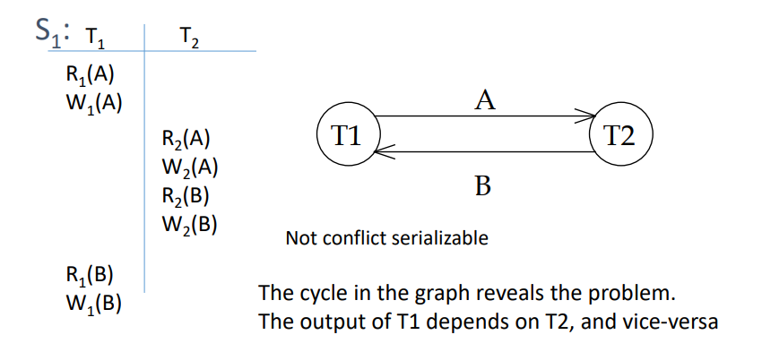
Voila! now we have a framework that tells us that if our schedule of interleaved operations is conflict serializable, then it is a valid schedule, and thus, the transactions would crate valid databases if acting on a valid Database! Voila! now we have a framework that tells us that if our schedule of interleaved operations is conflict serializable, then it is a valid schedule, and thus, the transactions would crate valid databases if acting on a valid Database!
§ 2PL Locking
There is a better way to ensure that our schedule is conflict serializable → Locking. We create two kinds of locks
- Shared Lock → Acquired by the Transaction for reading the object and can be acquired by multiple transactions at the same tie - hence, the name shared
- Exclusive Lock → Acquired b the transaction while writing to an object and can only be acquired by one transaction at a time
The rule is → once a transaction releases a lock, then it can't acquire any more locks. Thus, we can have a graph showing the slow growth phase of acquiring locks nad a release phase of releasing locks
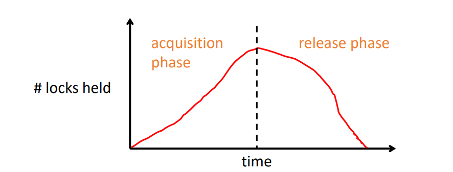
Thus, if our system sticks to this schedule, then it will be conflict serializable. However, this leads to a problem of cascaded Aborts, where the issue is that in case a data object is written to before the first transaction aborts the operation, then it might lead to issues, as shown below:
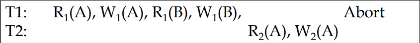
To alleviate this we create a stricter 2PL where the release happens all at once for each lock and thus, after acquiring alll locks the transactions wait to complete everything and then release the locks, resulting in the graph shown below:
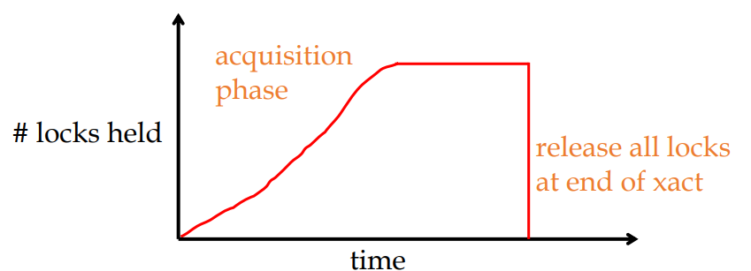
§ Networked File System (NFS)
It allows remote hosts to mount file systems over a network and interact with those file systems as though they are mounted locally. This enables system administrators to consolidate resources onto centralized servers on the network. The schematic is shown below:
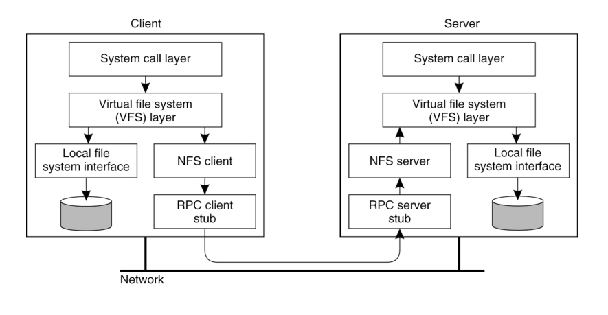
- The communication is over TCP/IP and Remote Procedure Calls (RPC) encapsulates the low-level data handling on the network into a set of procedures that can be used by the code, by creating procedures for API calls on client-side and executing these procedures on the server-side. Some common RPC frameworks are → SOAP, gRPC, Thrift
- So, the naive way to design the FS would be to forward every Fs operation over RPC to the server and thus, make the system operate as if they are working on the same filesystem. However, the volume of RPC calls adds latency → So we add client-side caching to this!
§ What do we cache?
- Read-only files
- Data written by client machine → write-back caching → Issue of failure tolerance
- Data written by other machines → Issues with consistency
§ What about Consistency?
- NFS Caches Data and File Attributes. The data never expires, but the file attributes expire after 60 seconds → so if a file is modified, the new time is reflected in its attribute in the server, and thus, it can be checked and updated on each client.
- Dirty data are buffered in the client machine until the file closes or till 30 sec → If the machine crashes between that, everything is lost
- Thus, NFS sacrifices consistency for less traffic
- Close-to-open consistency → We can write a way to ask the server for the latest file everytime before opening it!
- NFS does not provide any guarantee for multiple writes.
§ What about Failures?
- NFS uses a stateless server → The NFS server does not track anything but instead checks for permission for each operation
- No pending R/W operations across crash
- Read request needs to get an exact positin of hte file →
- Operations ar Idempotent → operations use unique ID of files and so, cannot be confused
- Write-Through Caching
§ Andrew File System (AFS)
In this, the files share the same namespace across machines but work with the assumption that the client-side machines cannot be trusted → thus, they must prove that they have the rights to perform certain operations → this is implemented through modifying RPC to Secure-RPC. TThe client Machines have disks and these can be used for caching. Thus, they realized the following characteristics, which were then incorporated:
- It's very rare for simultaneous R/W → they found this through analysis. Thus, they started aggressively caching on local disks to reduce the traffic load → Close-to-open consistency is fine!
- Prefetching → Large reads are faster than a lot of small reads on local disks and so, they fetched the whole data of the file
- Invalidation Callback → Clients registers with the servers when they have a copy of the file and when this file changes, the server tells them to invalidate this copy → If the server caches, then we reconstruct callback information by asking every client what file they have cached
§ Google File System (GFS)
Here, the following desing constraints are taken into account
- Machine Failures are normal
- Designed for Big-Data workloads
- Many files are written once and they are read sequentially
- High bandwidth is more important than latency
Thus, the GFS is geared towards these characteristics and the google applications are designed to work with this. A file is divided into chunks and labeled with 64-bit global IDs - called handles - which are then stored on
chunk servers. Each chunk is stored 3 times on 3 different chunk-servers, and the master keeps a track of the metadata → which chunks belong to which files
§ Theory of Consistency
- Consistency concerns arise when we are replicating or caching files.
Replication → Maintain data in multiple computers. It is necessary for
- Improving performance → Closer data is faster
- Increasing availability of services → To handle server and client crashes
- Enhancing the scalability of systems → E.g. CDNs that store the data locally and then
- Securing against malicious attack
In a Distributed system, we store data in distributed shared memory, distributed databases, or distributed file systems →
referred to as data-store
- Multiple processes can access shared data by accessing any replica on the data-store
§ Distributed Shared Memory
Communication in Distributed system happens through either sharing the memory or message passing. Shared-memory is more intuitive for consistency and so is more popular. The goal, thus, is to create a distributed system of memory shared by multiple systems, but each system thinks that it is accessing the same memory from the large memory pool!
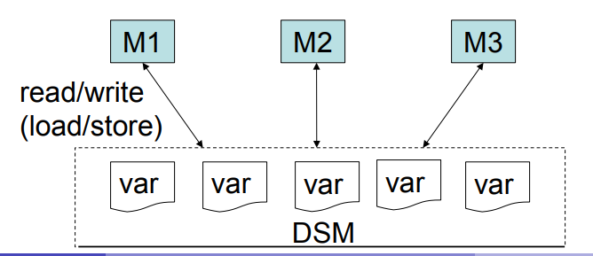
The naive way to do this would be through local copies of the whole memory with all the machine so that
- Read → Machine reads from local memory → Fast
- Write → The updates are sent to all the memory copies, while the machine does not wait for this to complete
So, in a way, this approach is basically message-passing applied to shared memory. This is fast, but has the following problems:
- Since we are not waiting for ACK after a write operation, what if the message gets lost and the order of delivering messages gets messed up → Since we have no control, we will see weird behavior
- Since we have no control over the order of updates, what if there are disagreements in udpates ?
§ Models of Consistency
In brief, consistency can be summarized as a contract between nodes that the last write of the data is shared. Let's take an example, that we will use again and again, to explain consistency models. Here, we have P1, P2, P3, and P4 as processes that are trying to read and write to the same variable x in the shared memory. The question is that if P1 writes a and P2 writes b, then what do P3 and P4 read?
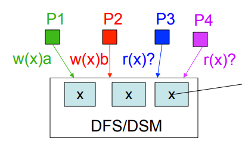
§ Strict Consistency
Each operation has a global timestamp and the order of execution is determined by sorting this. The rules are
- Each operation gets the latest value of the variable → Reads are never stale
- All operations are executed in the order of their timestamps
In this case, P3 and P4 will always observe b due to the time stamping of strict consistency → It is like running the process on one processor, where we use semaphores to work with x for all the processes → Target Achieved?
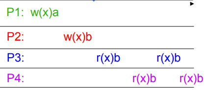
The issue is the implementation → We need to make the processes wait for write operations to complete before read → this take time and so we need exact clock synchronization. Computer clocks experience drift in their quartz crystals → leads to change in the rate of the timer interrupts used for maintaining time → Thus, we need
Universal Coordinated Time (UTC). The Cs-133 atom-based time is broadcast → the computers can receive this signal and synchronize their clocks. However, even nanoseconds might create issues!
Thus, strict consistency is hard to implement
§ Sequential Consistency
We let go of the assumption of synchronizing in real-time, and instead focus on preserving the order of events so that logical outputs are not affected. Thus, we now have the following rules:
- Each machine has an order on its own operation
- Results appear according to some total order
Thus, Reads may be stale in terms of real-time, but not in logical time but the writes are strictly ordered! Hence, the output of this on our example would be . For example, in the picture below the second case, which was not possible in the case of strict ordering, we now observe a dirty read. However, if we look at the order of the events, the read of b always happens after the read of a in both the machines. Hence, we still have the same logical order of operations and thus, our program will be sequentially consistent
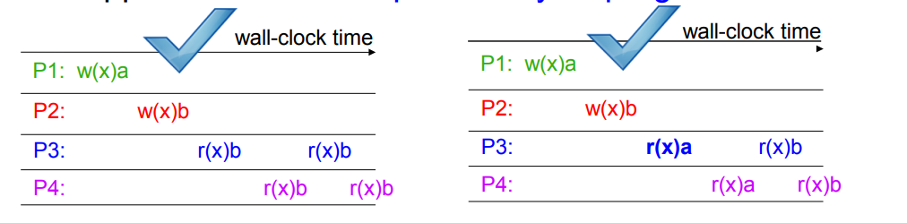
This is easier to implement than strict consistency since now we can interleave the operations and again if the operations are concurrent serially through the mechanism discussed before, we can have the same execution of programs.
- Requests to an individual memory location (storage object) are served from a single FIFO queue → Writes occur in a single order and the read happens only after the writes have occurred, thus maintaining consistency
Thus, we can say that not that all processes agree on exactly what time it is, but that they agree on the order in which events occur → This is the difference between timed and ordered processes. However, this is still expensive due to communication and wait times!
§ Lamport Logical Clocks
The basic idea is understanding which event happens before, which is represented by the '→ ' symbol. This is a partial order since there might be instances in a set of orders where the exact order cannot be determined, but the final order is clear.
Now, we need to use this relation to establish Logical clocks and we do this through
Lamport's Logical Clocks,. We, first attach a counter to events so that, events (e) satisfy the following properties:
- P1 → If a and b are two events in the same process, then they would be preserved in the time in which they take place a→b⟹C(a)<C(b)
- P2 → If a corresponds to sending a message and b corresponds to receiving that message, then also C(a)<C(b)
Using these properties we have a counter
Ci attached to each process
Pi, such that
- For each new event in Pi , we increment Ci by 1
- Each time a message is sent from Pi, it receives a timestamp of the value of Ci so that → ts(m)=Ci
- Whenever Pj receives a message from Pi, it adjusts its local counter as → Cj=max{Cj,ts(m)}
This lamport ordering is based on the events and not the other way round. Thus,
C(e)<C(e′) does not imply
e→e′, meaning it does not encode causal relationship. So, if I have
C(a)<C(b) then this does not mean that a necessarily preceded b! This is an issue for concurrency
§ Vector Clocks
We increase the counter to a vector of counter for k processes, so that :
- Each process Pi has its counter vector that has its counter at C[i] while the count of all other k-1 processes at the other places
- Whenever a process happens, the process increments the value of C[i] by 1, while all other values remain the same
- When it has to send a message, the process now shares the whole vector to the other process
- The process Pj which receives the vector updates its vector to the new value and increments the count of its own by 1 and then follows whatever it has to do
An example of this is shown below:
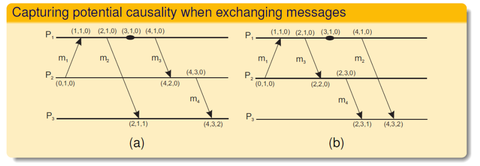
Here, we can see that in part a, all the processes start with values (0,0,0) and this then goes on as follows:
- P2 sends does performs an operation incrementing its counter by 1 in the vector while all other remain 0
- P2 sends a message to P1, which copies the vector and increments its counter by 1
- P1 performs an operation and increments its counter by 2
- P1 sens a message m2 P3, which receives m2 and updates its own counter b 1 after copying the vector
- P1 performs 2 more operations and then sens m3 to P2, which copies the value and increments its counter by 1
- P2 performs and operation j and increments its own counter by 1 and then sends the message m4 to P3, which updates its vector and adds 1 to its counter, which was previously at 1 and so the resulting vector is (4,3,2) instead of (4,3,1)
We now define a causal relationship based on the property that
if any message has all its vector value < or = the values of the vector of another message, and at least one of the values is strictly less, then it causally precedes the other. So, in this case, ts(m2) = (2,1,0) while the ts(m4) = (4,3,0), which implies that m2 may causally precede m4. In case (b) we see that ts(m2) = (4,1,0) while the ts(m4) = (2,3,0) → Thus, m2 and m4 may conflict.
§ Causal Consistency
If all causal operations are executed in an order that reflects their casual relationship, then the executions are causally consistent! So if two operations are concurrent, then they can be read in different orders by different machines, till the time the causal order is followed. For the same process example below as other consistencies:
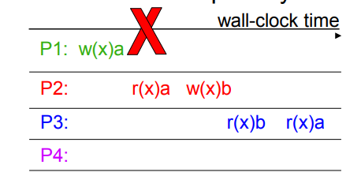
The issue here is that we see that that P1 writes a, and then P2 reads a and writes b. Since write of b happened after P2 reading a, there might be a causal relationship between P1s write of a and P2s write of b. Thus, when P3 reads b, then it cannot read a again since the writes are not concurrent → We can also reason in terms of messages. Assume the processes start with a null value for x. Now, after P1 writes a to x, the only way P2 can read a from x is if P1 has sent a message. Thus, when P2 writes b to x, which is clearly happening after it reading a, we can say that the write of b is causally related to the write of a by P1. Thus, the only way P3 can read b form the variable is whe P2 sends a message of update to P3. Since no other write has happened after P3 reading b, it is not possible for it to read a again. However, if we modify this as follows:
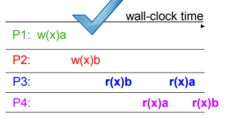
Now we see that the write of b happens after the write of a, and since there is no global time tracking the writes, these operations might not be causally related and thus, concurrent. Hence, if P first reads b and then reads a, it is acceptable since the writes are concurrent, and the same reasoning allows P4 reading in a different manner! this is very much possible if P1 writes a and sends the message to P4 → In terms of messages, we can see that if P1 writes a and P2 writes b, then essentially they are free to write to the variable since there is no read happening before the write i.e this is possible even if no message is exchanged between the processes. Now, P3 reading b is possible if a message is exchanged between P2 and then it reaching a is possible if it receives another message from P1 on the update. Similarly, P4 reading a is possible if it receives a message from P1 after its update, and then reading b is also possible since it can easily receive a message from P2 after it writes b to x. Hence, this is causally plausible and is thus, consistent
- Causal consistency is strictly weaker than sequential and strict consistency, but one can get better performance with it since parallel operations can be executed in different orders by different machines.